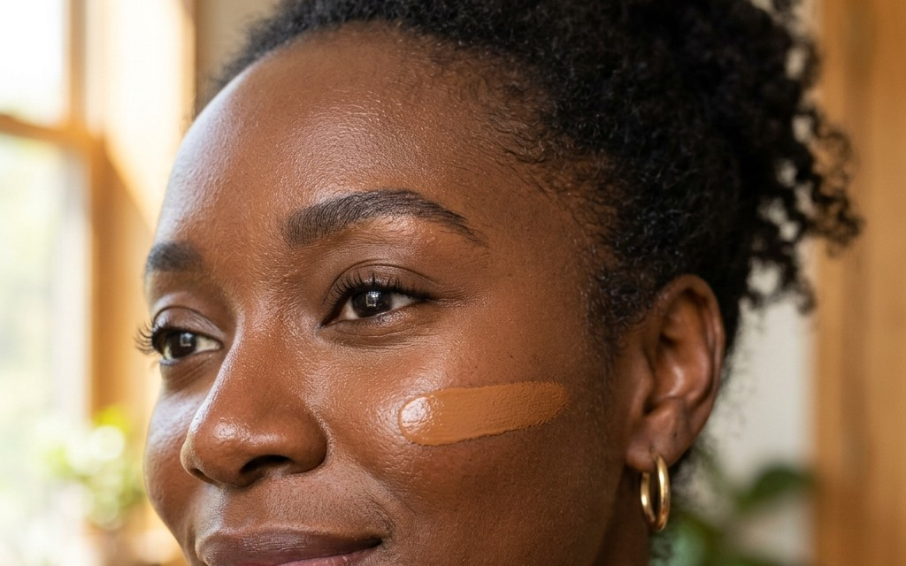

The myth
“Black skin does not burn, so it does not need sunscreen” is one of the most repeated skincare myths. Melanin does protect, but only partially: it provides roughly the equivalent of an SPF of 13, and it does not prevent pigmentation, melasma or skin cancer.
Why it matters for dark skin
- Sun worsens dark marks, so acne and razor-bump marks last longer
- It triggers and worsens melasma
- Healed burns and scars are especially sensitive and can darken
- Skin cancers, though less common, are often found later in people with darker skin
How to choose one
- Broad-spectrum SPF 30 or higher
- Look for “no white cast”, or a lightly tinted formula. Iron oxides also help against visible light and melasma
- Choose a texture you will actually use: gel, fluid or lotion
- Apply a generous amount to face and neck, and reapply every two hours in strong sun
What to skip
Do not rely on foundation with SPF alone, and do not use lemon, baking soda or toothpaste to “lighten” marks. They irritate skin and often make marks darker.
Next step
If you have stubborn marks, melasma or scars, a consultation can build a full plan. Read about skin of colour care.
A note
This article is for general education and is not a substitute for medical advice. See a doctor about your own situation.